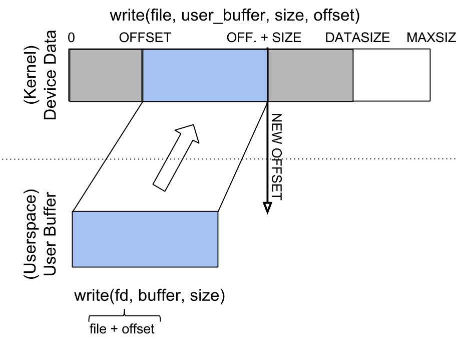
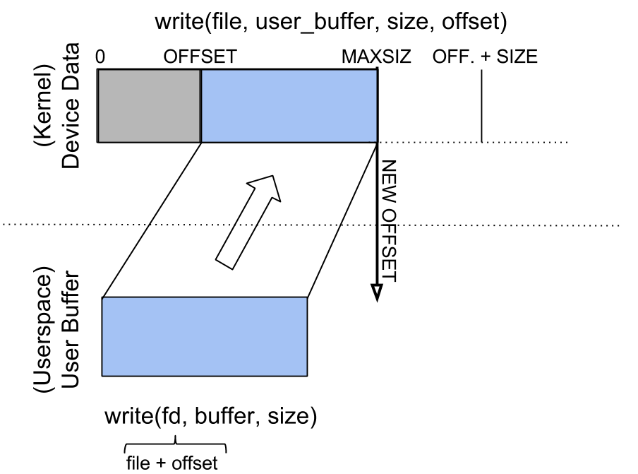

字符设备驱动程序¶
实验目标¶
- 理解字符设备驱动程序背后的概念
- 理解可以在字符设备上执行的各种操作
- 使用等待队列进行工作
概述¶
在 UNIX 系统中，用户通过特殊的设备文件访问硬件设备。这些文件被组织在 /dev 目录下，并且操作系统会将对这些文件的系统调用（如 open、 read、 write、 close、 lseek、 mmap 等），重定向到与物理设备关联的设备驱动程序。设备驱动程序是与硬件设备交互的内核组件（通常是一个模块）。
在 UNIX 世界中，设备文件和设备驱动程序分为两个类别：字符设备和块设备。这种划分是根据数据传输的速度、容量和数据组织方式进行的。第一类是一些速度较慢的设备，它们仅处理少量数据，并且对数据的访问不需要频繁的搜索查询，例如键盘、鼠标、串口、声卡、游戏手柄等设备。通常情况下，对这些设备（读取、写入）的操作是按字节顺序逐个执行的。第二类包括数据量大、数据以块为单位组织且搜索频繁的设备。这一类别的设备包括硬盘、光驱、RAM 磁盘以及磁带驱动器等。这些设备的读取和写入是以数据块为单位进行的。
对于这两种类型的设备驱动程序，Linux 内核提供了不同的 API。如果是字符设备，系统调用直接传递给设备驱动程序；而如果是块设备，驱动程序不能直接与系统调用交互。用户空间和块设备驱动程序之间的通信是通过文件管理子系统和块设备子系统进行的。这些子系统的作用是准备设备驱动程序所需的资源（缓冲区），将最近读取的数据保存在缓存缓冲区中，并为了提升性能而对读取和写入操作进行排序。
主设备号和次设备号¶
在 UNIX 中，设备通常有一个唯一的、固定的标识符与之关联。这种传统在 Linux 中得以保留，尽管标识符可以动态分配（出于兼容性的原因，大多数驱动程序仍然使用静态标识符）。这个标识符由两部分组成：主设备号（major）和次设备号（minor）。第一部分用于标识设备类型（如 IDE 硬盘、SCSI 硬盘、串口等），而第二部分用于标识设备本身（如第一个硬盘、第二个串口等）。大多数情况下，主设备号用于标识驱动程序，而次设备号用于标识驱动程序所服务的某个物理设备。通常情况下，一个驱动程序会有一个关联的主设备号，并负责处理与该主设备号关联的所有次设备号。
$ ls -la /dev/hda? /dev/ttyS?
brw-rw---- 1 root disk 3, 1 2004-09-18 14:51 /dev/hda1
brw-rw---- 1 root disk 3, 2 2004-09-18 14:51 /dev/hda2
crw-rw---- 1 root dialout 4, 64 2004-09-18 14:52 /dev/ttyS0
crw-rw---- 1 root dialout 4, 65 2004-09-18 14:52 /dev/ttyS1
如上例所示，可以使用 ls 命令找到设备类型信息。特殊字符文件在命令输出的第一列中通过字符 c 进行标识，块类型则通过字符 b 进行标识。在结果的第 5 和第 6 列中，可以看到每个设备的主设备号和次设备号。
某些主设备号是静态分配给设备的（可以在内核源代码的 Documentation/admin-guide/devices.txt 文件中查看）。选择新设备的标识符时，你可以使用两种方法：静态方法（选择一个尚未被使用的数字）或动态方法。/proc/devices 目录中列出了已加载的设备，以及其主设备号。
要创建设备类型文件，请使用 mknod 命令；该命令的参数为设备的类型 (block 或 character)、主设备号和次设备号 (mknod name type major minor)。因此，要想创建一个名为 mycdev、主设备号为 42、次设备号为 0 的字符设备，可以使用以下命令：
# mknod /dev/mycdev c 42 0
要创建名为 mybdev、主设备号为 240 并且次设备号为 0 的块设备，请使用如下命令：
# mknod /dev/mybdev b 240 0
接下来，我们会把字符设备称为驱动程序。
字符设备的数据结构¶
在内核中，字符设备由 struct cdev 结构表示，该结构用于在系统中注册字符设备。大多数驱动程序操作都用到了三个重要的结构: struct file_operations、 struct file 和 struct inode。
struct file_operations¶
如上所述，字符设备驱动程序接收用户对设备类型文件的原始系统调用。因此，要想实现字符设备驱动程序，我们就需要实现特定于文件的系统调用，例如 open、 close、 read、 write、 lseek 以及 mmap 等。这些操作在 struct file_operations 结构的字段中描述：
#include <linux/fs.h>
struct file_operations {
struct module *owner;
loff_t (*llseek) (struct file *, loff_t, int);
ssize_t (*read) (struct file *, char __user *, size_t, loff_t *);
ssize_t (*write) (struct file *, const char __user *, size_t, loff_t *);
[...]
long (*unlocked_ioctl) (struct file *, unsigned int, unsigned long);
[...]
int (*open) (struct inode *, struct file *);
int (*flush) (struct file *, fl_owner_t id);
int (*release) (struct inode *, struct file *);
[...]
可以看出，函数的签名与用户使用的系统调用不同。操作系统位于用户和设备驱动程序之间，其简化了设备驱动程序的实现。
open 函数不接收参数路径或控制文件打开模式的各种参数。同样， read、 write、 release、 ioctl、 lseek 的参数也不包括文件描述符。相反，这些例程接收两个结构作为参数： file 和 inode。这两个结构都从不同的角度表示文件。
- 所提供操作的大多数参数具有直接的含义：
file和inode标识设备类型文件；size是要读取或写入的字节数；offset是要读取或写入的位移（将相应地更新）；user_buffer是要读取/写入的用户缓冲区；whence是寻找的方式（搜索操作开始的位置）；cmd和arg是由用户发送到 ioctl（IO 控制）调用的参数。
inode 和 file 结构¶
inode 代表文件系统视角中的文件。inode 的属性包括文件大小、权限和相关时间。单个 inode 在文件系统中唯一标识一个文件。
file 结构仍然代表单个文件，但更接近用户的视角。file 结构的属性中，有 inode、文件名、文件打开属性和文件位置等。在给定时间内，所有打开的文件都有一个关联的 file 结构。
为了更好的理解 inode 和 file 之间的区别，我们可以使用面向对象编程的类比：如果我们将 inode 视为一个类，那么文件就是对象，即 inode 类的实例。inode 表示文件的静态映像（inode 没有状态），而 file 表示文件的动态映像（file 具有状态）。
回到设备驱动程序，这两个实体几乎总是有标准的使用方式：inode 用于确定操作执行的设备的主设备号和次设备号，而 file 用于确定文件的打开标志，还可以保存和（稍后）访问私有数据。
file 结构包含许多字段，其中包括：
f_mode，指定是读取 (FMODE_READ) 还是写入 (FMODE_WRITE)；f_flags，指定文件的打开标志 (O_RDONLY、O_NONBLOCK、O_SYNC、O_APPEND、O_TRUNC等)；f_op，指定与文件关联的操作（指向file_operations结构的指针）；private_data，一个指针，程序员可以用来存储特定于设备的数据；该指针将被初始化到程序员分配的内存位置。f_pos，文件内的偏移量。
inode 结构包含许多信息，其中包括一个 i_cdev 字段，它是一个指向定义字符设备的结构的指针（如果 inode 对应于字符设备）。
实现操作¶
为了实现设备驱动程序，建议创建一个包含有关设备信息和模块使用的信息的结构体。如果是字符设备驱动程序，则结构体将包含一个指向设备的 cdev 结构体字段。下面的示例使用了名为 my_device_data 的结构体：
#include <linux/fs.h>
#include <linux/cdev.h>
struct my_device_data {
struct cdev cdev;
/* 数据从这里开始 */
//...
};
static int my_open(struct inode *inode, struct file *file)
{
struct my_device_data *my_data;
my_data = container_of(inode->i_cdev, struct my_device_data, cdev);
file->private_data = my_data;
//...
}
static int my_read(struct file *file, char __user *user_buffer, size_t size, loff_t *offset)
{
struct my_device_data *my_data;
my_data = (struct my_device_data *) file->private_data;
//...
}
名为 my_device_data 的结构包含与设备相关的数据。cdev 字段 (cdev 类型)对应字符设备，用于在系统中记录和识别设备。可以使用 inode 结构的 i_cdev 字段（使用 container_of 宏）找到指向 cdev 的指针。可以在打开文件时，在 file 结构的 private_data 字段中存储可用于 read、 write、 release 等函数的信息。
字符设备的注册和注销¶
要想注册和注销设备，你需要指定主设备号和次设备号。dev_t 类型用于保存设备的标识符（包括主设备号和次设备号），其可以通过使用 MKDEV 宏来获取。
要想完成设备标识符的静态分配和释放，可以使用 register_chrdev_region 和 unregister_chrdev_region 函数：
#include <linux/fs.h>
int register_chrdev_region(dev_t first, unsigned int count, char *name);
void unregister_chrdev_region(dev_t first, unsigned int count);
建议将设备标识符动态分配给 alloc_chrdev_region 函数。
以下程序准备了 my_minor_count 个设备，从 my_major 主设备号和 my_first_minor 次设备号开始（如果次设备号的最大值溢出了，就会切换到下一个主设备号）：
#include <linux/fs.h>
...
err = register_chrdev_region(MKDEV(my_major, my_first_minor), my_minor_count,
"my_device_driver");
if (err != 0) {
/* 报告错误 */
return err;
}
...
在分配标识符之后，字符设备需要进行初始化（使用 cdev_init 函数），并通知内核（使用 cdev_add 函数）。只有在设备准备好接收调用时才能调用 cdev_add 函数。使用 cdev_del 函数可以移除设备。
#include <linux/cdev.h>
void cdev_init(struct cdev *cdev, struct file_operations *fops);
int cdev_add(struct cdev *dev, dev_t num, unsigned int count);
void cdev_del(struct cdev *dev);
以下程序注册并初始化 MY_MAX_MINORS 个设备：
#include <linux/fs.h>
#include <linux/cdev.h>
#define MY_MAJOR 42
#define MY_MAX_MINORS 5
struct my_device_data {
struct cdev cdev;
/* 数据从这里开始 */
//...
};
struct my_device_data devs[MY_MAX_MINORS];
const struct file_operations my_fops = {
.owner = THIS_MODULE,
.open = my_open,
.read = my_read,
.write = my_write,
.release = my_release,
.unlocked_ioctl = my_ioctl
};
int init_module(void)
{
int i, err;
err = register_chrdev_region(MKDEV(MY_MAJOR, 0), MY_MAX_MINORS,
"my_device_driver");
if (err != 0) {
/* 报告错误 */
return err;
}
for(i = 0; i < MY_MAX_MINORS; i++) {
/* 初始化 devs[i] 字段 */
cdev_init(&devs[i].cdev, &my_fops);
cdev_add(&devs[i].cdev, MKDEV(MY_MAJOR, i), 1);
}
return 0;
}
以下代码删除并注销它们：
void cleanup_module(void)
{
int i;
for(i = 0; i < MY_MAX_MINORS; i++) {
/* 释放 devs[i] 字段 */
cdev_del(&devs[i].cdev);
}
unregister_chrdev_region(MKDEV(MY_MAJOR, 0), MY_MAX_MINORS);
}
Note
my_fops 结构的初始化使用了 C99 标准中的按名称初始化成员的方法（参见指定初始化器和 file_operations 结构）。未在此初始化中显式出现的结构成员将被设置为其类型的默认值。例如，在上述初始化之后，my_fops.mmap 将为 NULL。
访问进程地址空间¶
设备的驱动程序是应用程序与硬件之间的接口。因此，我们经常需要访问用户空间数据。直接访问用户空间数据是不可行的（通过解引用用户空间指针）。直接访问用户空间指针可能导致不正确的行为（根据体系结构，用户空间指针可能无效或映射到内核空间）、内核 oops（用户态指针可能引用非驻留内存区域）或安全问题。请通过调用下面的宏/函数来正确访问用户空间数据：
#include <asm/uaccess.h>
put_user(type val, type *address);
get_user(type val, type *address);
unsigned long copy_to_user(void __user *to, const void *from, unsigned long n);
unsigned long copy_from_user(void *to, const void __user *from, unsigned long n);
这些宏/函数成功后返回 0，错误时返回其他值，并具有以下作用：
put_user将值val存储到用户空间地址address；类型可以是 8 位、16 位、32 位，也可以是 64 位（最大的支持类型取决于硬件平台）；get_user类似于前一个函数，只是将值设置为与用户空间地址address处的值相同的值；copy_to_user从from引用的内核空间地址开始复制n字节到由to引用的用户空间地址；copy_from_user从from引用的用户空间地址开始复制n字节到由to引用的内核空间地址；
以下是这些函数的常用代码示例：
#include <asm/uaccess.h>
/*
* 将最多 size 字节复制到用户空间。
* 成功则返回 0，错误则返回其他值。
*/
if (copy_to_user(user_buffer, kernel_buffer, size))
return -EFAULT;
else
return 0;
打开和释放¶
open 函数执行设备的初始化。在大多数情况下，这些操作涉及初始化设备并填充特定数据（如果是第一次打开调用）。*释放函数*用于释放设备特定资源：在调用全部完成后，解除对特定数据的锁定并关闭设备。
在大多数情况下，*打开函数*的结构如下所示：
static int my_open(struct inode *inode, struct file *file)
{
struct my_device_data *my_data =
container_of(inode->i_cdev, struct my_device_data, cdev);
/* 验证设备访问权限 */
file->private_data = my_data;
/* 初始化设备 */
...
return 0;
}
实施 open 函数时会遇到访问控制的问题。有时候一个设备在同一时刻需要只打开一次；更具体地说，不允许在释放之前进行第二次打开。为了实现这种限制，你可以选择一种处理已经打开的设备的打开调用的方法：它可以返回一个错误 (-EBUSY)，阻塞打开调用直到进行释放操作，或者在执行打开操作之前关闭设备。
在用户空间对设备调用打开和关闭函数时，会调用驱动程序中的 my_open 和 my_release 函数。以下是一个用户空间调用的示例：
int fd = open("/dev/my_device", O_RDONLY);
if (fd < 0) {
/* 处理错误 */
}
/* 执行工作 */
//..
close(fd);
读取和写入¶
用户空间程序调用读取或写入系统调用，会导致设备驱动程序的读和写操作。
if (read(fd, buffer, size) < 0) {
/* 处理错误 */
}
if (write(fd, buffer, size) < 0) {
/* 处理错误 */
}
read 和 write 函数会在设备和用户空间之间传输数据：read 函数从设备读取数据并将其传输到用户空间，而 write 函数则读取用户空间的数据并将其写入设备。参数 buffer（缓冲区）是一个用户空间指针，这就是为什么需要使用 copy_to_user 或 copy_from_user 函数。
read 或 write 返回的值可以是：
- 传输的字节数；如果返回的值小于参数 size（请求的字节数），则表示只传输了部分数据。大多数情况下，用户空间应用程序会持续调用系统调用（read 或 write）函数，直到所需的数据量全部传输完成为止。
- 如果是 read，返回值为 0 表示文件读到底了；如果 write 返回值为 0，则表示没有写入任何字节且没有发生错误；在这种情况下，用户空间应用程序会重新尝试写入调用。
- 负值表示程序错误。
要执行由多次部分传输组成的数据传输，应执行以下操作：
- 在作为参数接收的缓冲区和设备之间传输尽可能多的字节（从作为参数接收的偏移量开始进行设备写入/读取）；
- 更新作为参数接收的偏移量，以表示下一次读取/写入数据的位置；
- 返回传输的字节数。
下面的示例展示了考虑了内部缓冲区大小、用户缓冲区大小和偏移量的 read 函数的程序：
static int my_read(struct file *file, char __user *user_buffer,
size_t size, loff_t *offset)
{
struct my_device_data *my_data = (struct my_device_data *) file->private_data;
ssize_t len = min(my_data->size - *offset, size);
if (len <= 0)
return 0;
/* 从 my_data->buffer 读取数据到用户缓冲区 */
if (copy_to_user(user_buffer, my_data->buffer + *offset, len))
return -EFAULT;
*offset += len;
return len;
}
下面的图片展示了读操作以及数据如何在用户空间和驱动程序之间传输：
- 驱动程序有足够的可用数据（从偏移位置开始），以准确地传输所需大小（SIZE）给用户。
- 传输的数量比所需的少。
{kind=link}
{kind=link}
我们可以将驱动程序实现的读操作视为对用户空间读取请求的响应。在这种情况下，驱动程序负责根据其读取的量推进偏移，并返回读取的大小（可能小于所需大小）。
写函数的结构类似：
static int my_write(struct file *file, const char __user *user_buffer,
size_t size, loff_t * offset)
{
struct my_device_data *my_data = (struct my_device_data *) file->private_data;
ssize_t len = min(my_data->size - *offset, size);
if (len <= 0)
return 0;
/* 将数据从用户缓冲区读到 my_data->buffer */
if (copy_from_user(my_data->buffer + *offset, user_buffer, len))
return -EFAULT;
*offset += len;
return len;
}
写操作将响应来自用户空间的写请求。在这种情况下，根据驱动程序的最大容量（MAXSIZ），它可以写入比所需大小更多或更少的数据。
 {kind=link}
{kind=link}
ioctl¶
除了读和写操作之外，驱动程序需要能够执行某些物理设备控制任务。这些操作通过实现一个名为 ioctl 的函数来完成。最初，ioctl 系统调用使用了 Big Kernel Lock。因此，其无锁版本 unlocked_ioctl 逐渐替代了该调用。你可以在 LWN 上阅读更多信息：http://lwn.net/Articles/119652/
static long my_ioctl (struct file *file, unsigned int cmd, unsigned long arg);
cmd 是从用户空间发送的命令。如果用户空间调用发送了一个值，可以通过 cmd 直接访问它。如果获取了一个缓冲区，那么 arg 的值将是指向它的指针，并且必须通过 copy_to_user 或 copy_from_user 进行访问。
在实现 ioctl 函数之前，必须选择与命令对应的数字。一种方法是从 0 开始选择连续的数字，但我们建议使用 _IOC(dir, type, nr, size) 宏定义来生成 ioctl 代码。宏定义的参数如下：
dir表示数据传输 (_IOC_NONE,_IOC_READ,_IOC_WRITE)。type表示魔数 (Documentation/ioctl/ioctl-number.txt)；nr是设备的 ioctl 代码；size是传输数据的大小。
下面的示例展示了 ioctl 函数的实现：
#include <asm/ioctl.h>
#define MY_IOCTL_IN _IOC(_IOC_WRITE, 'k', 1, sizeof(my_ioctl_data))
static long my_ioctl (struct file *file, unsigned int cmd, unsigned long arg)
{
struct my_device_data *my_data =
(struct my_device_data*) file->private_data;
my_ioctl_data mid;
switch(cmd) {
case MY_IOCTL_IN:
if( copy_from_user(&mid, (my_ioctl_data *) arg,
sizeof(my_ioctl_data)) )
return -EFAULT;
/* 处理数据以及执行命令 */
break;
default:
return -ENOTTY;
}
return 0;
}
用户空间调用 ioctl 函数时，将调用驱动程序的 my_ioctl 函数。以下是用户空间调用的示例：
if (ioctl(fd, MY_IOCTL_IN, buffer) < 0) {
/* 处理错误 */
}
等待队列¶
许多情况下，线程需要等待某个操作完成。但最好避免忙等待。通过使用等待队列，我们可以阻塞一个线程，直到发生某个事件再激活这个线程。当条件满足时（可能是内核中的其他地方、另一个进程、中断或可延迟工作）我们会唤醒该进程。
等待队列是一个等待特定事件的进程列表。队列使用 wait_queue_head_t 类型定义，并可通过以下函数/宏使用：
#include <linux/wait.h>
DECLARE_WAIT_QUEUE_HEAD(wq_name);
void init_waitqueue_head(wait_queue_head_t *q);
int wait_event(wait_queue_head_t q, int condition);
int wait_event_interruptible(wait_queue_head_t q, int condition);
int wait_event_timeout(wait_queue_head_t q, int condition, int timeout);
int wait_event_interruptible_timeout(wait_queue_head_t q, int condition, int timeout);
void wake_up(wait_queue_head_t *q);
void wake_up_interruptible(wait_queue_head_t *q);
上述宏/函数的作用如下：
init_waitqueue_head()初始化等待队列；如果是要在编译期间初始化队列，可以使用DECLARE_WAIT_QUEUE_HEAD宏；wait_event()和wait_event_interruptible()在条件为假时将当前线程加入队列，将其设置为 TASK_UNINTERRUPTIBLE 或 TASK_INTERRUPTIBLE，并调用调度程序以安排新线程；当另一个线程调用 wake_up 函数时，等待将被中断；wait_event_timeout()和wait_event_interruptible_timeout()具有与上述函数相同的效果，只是等待也可以在参数 timeout（超时）结束时被中断；wake_up()将所有处于 TASK_INTERRUPTIBLE 和 TASK_UNINTERRUPTIBLE 状态的线程切换到 TASK_RUNNING 状态；从队列中移除这些线程；wake_up_interruptible()执行相同的操作，但只唤醒处于 TASK_INTERRUPTIBLE 状态的线程。
举个简单的示例，线程等待某个标志位的值的改变。以下代码实现初始化：
#include <linux/sched.h>
wait_queue_head_t wq;
int flag = 0;
init_waitqueue_head(&wq);
某个线程等待标志的值变为非零：
wait_event_interruptible(wq, flag != 0);
而另一个线程将改变标志（flag）的值并唤醒等待中的线程：
flag = 1 ;
wake_up_interruptible (&wq);
练习¶
Important
要解决练习，你需要执行以下步骤：
- 用模板来准备骨架
- 构建模块
- 将模块复制到虚拟机
- 启动虚拟机并在虚拟机中测试模块。
当前实验名称为 设备驱动。请参阅任务名称的练习。
骨架代码是从位于 tools/labs/templates 的完整源代码示例中生成的。要解决任务，首先要为所有实验生成骨架代码：
tools/labs $ make clean
tools/labs $ LABS=<lab name> make skels
你还可以使用以下命令为单个任务生成骨架代码：
tools/labs $ LABS=<lab name>/<task name> make skels
生成骨架驱动程序后，构建源代码：
tools/labs $ make build
然后，复制模块并启动虚拟机：
tools/labs $ make copy
tools/labs $ make boot
模块将放置在 /home/root/skels/设备驱动/<task_name> 目录中。
或者，我们可以通过 scp 命令复制文件，以避免重新启动虚拟机。有关通过网络连接到虚拟机的详细信息，请参阅 连接到虚拟机。
请查看 练习 部分以获取更详细的信息。
Warning
在开始练习或生成骨架之前，请在 Linux 仓库中运行 git pull 命令，以确保你拥有最新版本的练习。
如果你有本地更改，pull 命令将失败。使用 git status 检查本地更改。如果要保留更改，在 pull 之前运行 git stash，之后运行 git stash pop。要放弃更改，请运行 git reset --hard master。
如果你在 git pull 之前已经生成了骨架，你需要再次生成骨架。
1. 注册/注销¶
驱动程序控制一个具有 MY_MAJOR 主设备号和 MY_MINOR 次设备号的设备（这些宏定义在 kernel/so2_cdev.c 文件中）。
使用 mknod 创建 /dev/so2_cdev 字符设备节点。
Hint
阅读实验中的 主设备号和次设备号 部分。
在 init 和 exit 模块函数中实现设备的注册和注销，设备名称应为
so2_cdev。实现 TODO 1。Hint
阅读 字符设备的注册和注销 部分。
通过
pr_info函数使得在注册和注销操作后显示一条消息，以确认它们是否成功。然后将模块加载到内核中：$ insmod so2_cdev.ko并查看
/proc/devices中的字符设备：$ cat /proc/devices | less确定使用主设备号 42 注册的设备类型。请注意，
/proc/devices仅包含设备类型（主设备号），而不包含实际设备（即次设备号）。Note
/dev 中的条目不会通过加载模块来创建。可以通过两种方式创建：
- 手动使用
mknod命令，就像我们上面所做的那样。- 使用 udev 守护进程自动创建
卸载内核模块
rmmod so2_cdev
2. 注册一个已注册的主设备号¶
修改 MY_MAJOR，使其指向已经使用的主设备号。
Hint
查看 /proc/devices 来获取一个已分配的主设备号。
参考 errno-base.h 并找出错误码的含义。恢复模块的初始配置。
3. 打开和关闭¶
运行 cat /dev/so2_cdev ，从我们的字符设备中读取数据。由于驱动程序没有实现打开函数，因此读取操作无法正常工作。按照标记为 TODO 2 的注释进行操作并实现以下内容。
- 初始化设备
- 在
so2_device_data结构体中添加一个 cdev 字段。- 阅读实验中的 字符设备的注册和注销 部分。
- 在驱动程序中实现打开和释放函数。
- 在打开和释放函数中显示一条消息。
- 再次读取
/dev/so2_cdev文件。按照内核显示的消息进行操作。由于尚未实现read函数，因此仍会出现错误。
Note
设备驱动程序操作的原型在 file_operations 结构体中。请阅读 打开和释放 部分。
4. 访问限制¶
使用原子变量限制设备访问，以便一次只能有一个进程打开该设备。其他进程将收到“设备忙”错误 (-EBUSY)。限制访问将在驱动程序中的打开函数中完成。按照标记为 TODO 3 的注释进行操作并实现以下内容。
- 在设备结构体中添加
atomic_t变量。- 在模块初始化时对该变量进行初始化。
- 在打开函数中使用该变量限制对设备的访问。我们建议使用
atomic_cmpxchg()。- 在释放函数中重置该变量以恢复对设备的访问权限。
- 要测试你的部署，你需要模拟对设备的长期使用。要模拟休眠，请在设备打开操作的末尾调用调度器：
set_current_state(TASK_INTERRUPTIBLE);
schedule_timeout(1000);
Note
atomic_cmpxchg 函数的优点在于它可以在一个原子操作中检查变量的旧值并将其设置为新值。详细了解 atomic_cmpxchg。这里有一个使用示例 http://elixir.free-electrons.com/linux/v4.9/source/lib/dump_stack.c#L24 。
5. 读操作¶
在驱动程序中实现读取函数。按照标有 TODO 4 的注释并实现以下步骤：
- 在
so2_device_data结构中保持一个缓冲区，并用MESSAGE宏的值进行初始化。缓冲区的初始化在模块的init函数中完成。- 在读取调用时，将内核空间缓冲区的内容复制到用户空间缓冲区。
- 使用
copy_to_user()函数将信息从内核空间复制到用户空间。- 暂时忽略大小和偏移参数。可以假设用户空间的缓冲区足够大，不需要检查读取函数的大小参数的有效性。
- 读取调用返回的值是从内核空间缓冲区传输到用户空间缓冲区的字节数。
- 实现完成后，使用
cat /dev/so2_cdev进行测试。
Note
命令 cat /dev/so2_cdev 不会结束（使用Ctrl+C）。请阅读 `读和写`_ 和 `访问进程的地址空间`_ 部分。如果要显示偏移值，请使用以下形式的构造: pr_info("Offset: %lld \n", *offset)；偏移值的数据类型 loff_t 是 long long int 的 typedef。
cat 命令一直读取到文件的末尾，文件通过读取返回值为 0 来表示读到末尾了。因此，为了正确实现，你需要更新并使用读函数中接收的偏移参数，并在用户达到缓冲区末尾时返回 0。
修改驱动程序以使 cat 命令结束：
- 使用大小参数。
- 对于每次读取，相应地更新偏移参数。
- 确保读取函数返回已复制到用户缓冲区的字节数。
Note
通过解引用偏移参数，可以读取并移动在文件中的当前位置。每次成功进行读取后都需要更新其值。
6. 写操作¶
添加将消息写入内核缓冲区以替换预定义消息的功能。在驱动程序中实现写函数。按照标有 TODO 5 的注释进行操作。
此时忽略偏移参数。你可以假设驱动程序缓冲区足够大。你无需检查写函数大小参数的有效性。
7. ioctl 操作¶
对于这个练习，我们希望在驱动程序中添加 ioctl MY_IOCTL_PRINT 来显示来自宏 IOCTL_MESSAGE 的消息。按照标有 TODO 6 的注释进行操作。
为此：
- 在驱动程序中实现 ioctl 函数。
- 我们需要使用
user/so2_cdev_test.c调用 ioctl 函数，并传递适当的参数。- 为了进行测试，我们将使用一个用户空间程序 (
user/so2_cdev_test.c) 来调用具有所需参数的ioctl函数。
Attention
用户空间代码在 make build 时会自动编译，并在 make copy 时被复制。
由于我们需要为 32 位的 qemu 机器编译程序，如果你的主机是 64 位的，那么你需要安装 gcc-multilib 软件包。
额外练习¶
带消息的 ioctl¶
为驱动程序添加两个 ioctl 操作，用于修改与驱动程序关联的消息。应使用固定长度的缓冲区（BUFFER_SIZE）。
- 在驱动程序的
ioctl函数中添加以下操作：MY_IOCTL_SET_BUFFER：用于向设备写入消息；MY_IOCTL_GET_BUFFER：用于从设备读取消息。
- 为进行测试，将所需的命令行参数传递给用户空间程序。
使用等待队列的 ioctl¶
为设备驱动程序添加两个 ioctl 操作，用于队列处理。
- 在驱动程序的
ioctl函数中添加以下操作：MY_IOCTL_DOWN：将进程添加到队列中；MY_IOCTL_UP：将进程从队列中移除。
- 在设备结构中填充
wait_queue_head_t字段和一个标志。 - 不要忘记初始化等待队列和标志。
- 从前一个练习中移除独占访问条件。
- 为进行测试，将所需的命令行参数传递给用户空间程序。
当进程被添加到队列中时，它将保持阻塞状态；要运行队列命令，请使用 Alt+F2 打开虚拟机中的新控制台；可以使用 Alt+F1 返回到上一个控制台。如果是通过 SSH 连接到虚拟机的，请打开新的控制台。
O_NONBLOCK 实现¶
Note
如果文件使用 O_NONBLOCK 标志打开，则其操作将是非阻塞的。
如果在执行读取操作时数据不可用，则会发生以下情况：
- 如果文件是使用
O_NONBLOCK打开的，读取调用将返回-EWOULDBLOCK。- 否则，当前任务（进程）将被放入等待队列，并在数据可用时解除阻塞（在我们的情况下，在写入时）。
- 为允许非阻塞的读取操作，从前面的练习中移除独占访问条件。
- 可以使用前一个练习中定义的队列。
- 可以忽略文件偏移量。
- 将数据的初始大小修改为
0，以便进行测试。 - 为进行测试，将所需的命令行参数传递给用户空间程序。
- 当使用
n选项时，测试程序会将打开标志更改为O_NONBLOCK，然后执行read操作。
- 当使用
- 运行
cat /dev/so2_dev命令时，打开文件过程中使用了哪些标志？